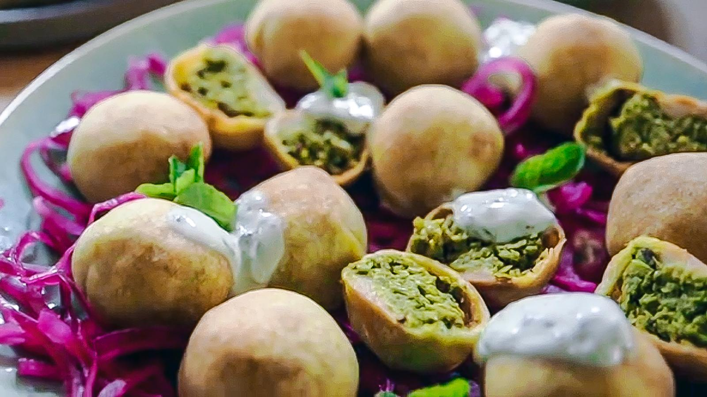

Kachori

Description
Kachori is a northern Indian dish that is served as an appetizer. It is a pea filling wrapped in pastry dough that is deep fried to perfection.
It is commonly dipped into different chutneys and also served during Diwali.
Ingredients
- Peas
- Salt
- Garam masala
- Fennel seeds
- Coconut flakes (dessicated)
- Raisins
- Green chiles
- Sesame seeds
- Lemon
- Coriander
Steps
- Cook peas from frozen
- Dry on lint-free towel
- Heat oil in a cast iron
- Add garam masala, fennel seeds, coconut, raisins, green chiles
- Cook mixture until dry
- Add sesame seeds, lemon, coriander.
- Cool mixture
- Wrap mixture in pastry dough
- Deep fry until golden